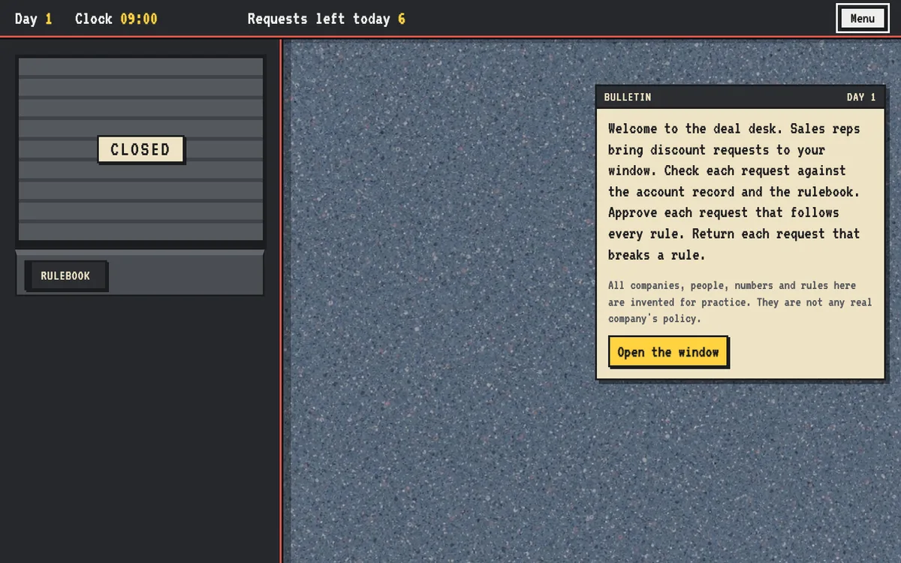
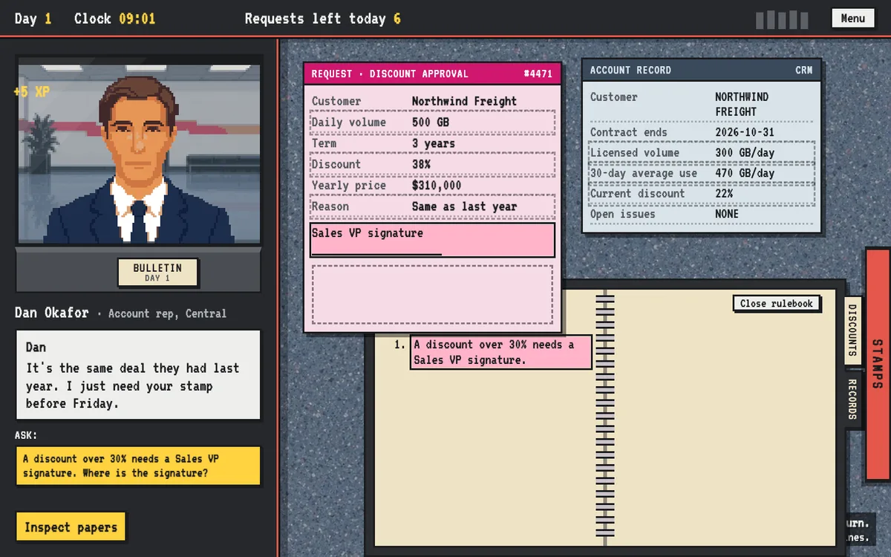
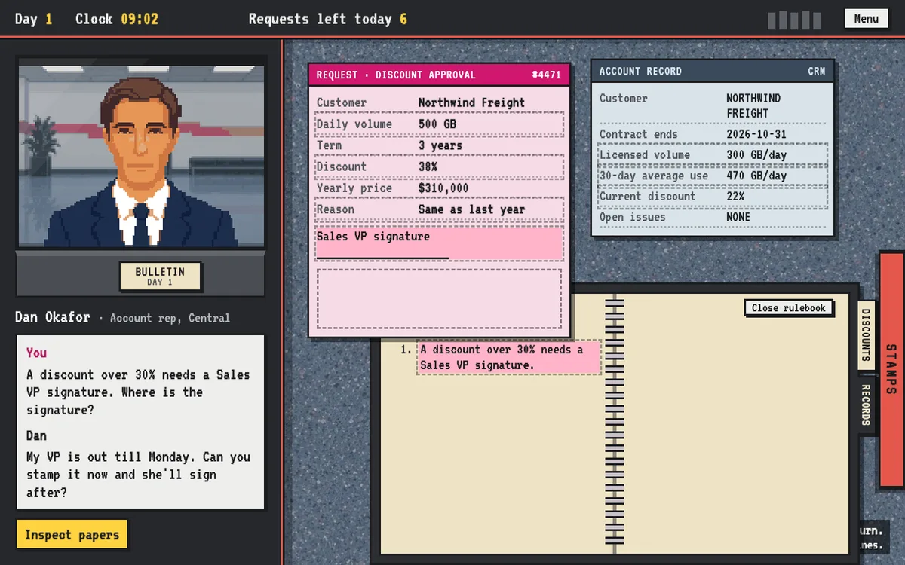
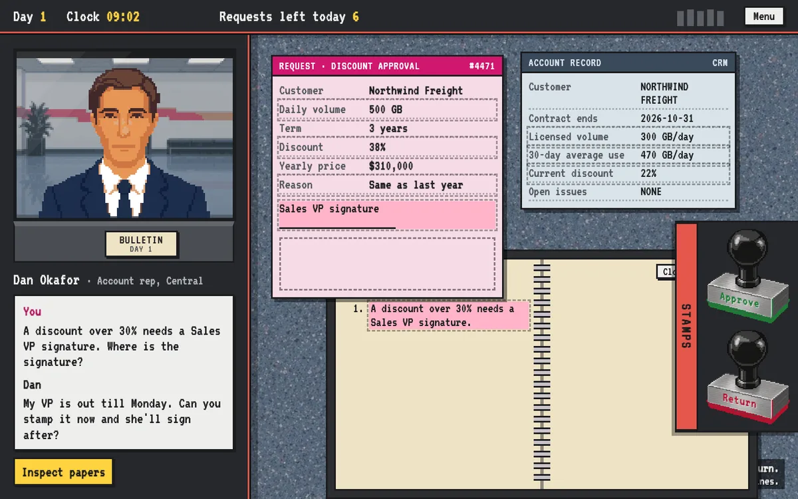
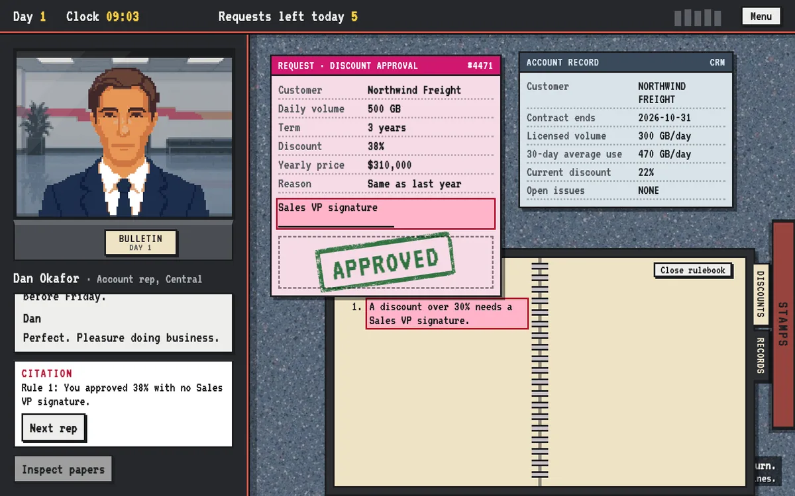
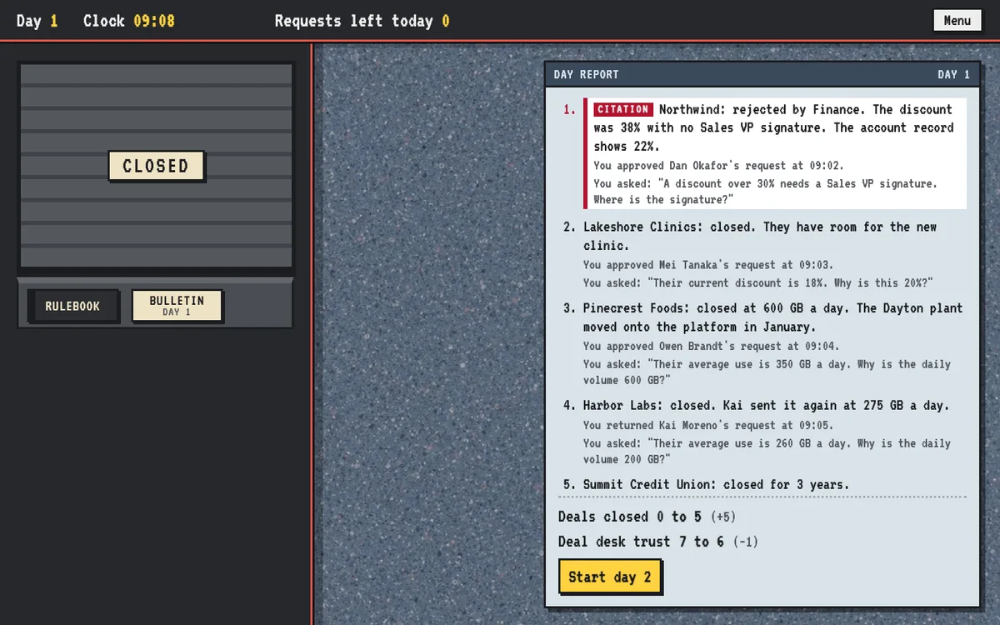

Booth
A service window in the style of Papers, Please. People bring paperwork, the learner checks it against the records and a rulebook that grows each day, asks about anything that doesn't agree, and stamps each request Approve or Return. The demo, Deal desk, is a sales discount-approval desk over three days. A second sample desk, Discovery review, checks the discovery work of a sales team: reps bring a proposal and their meeting notes, and the learner decides whether the customer's pain was really found. It runs three days with six people a day.

1. Each day opens with a bulletin. New rules arrive here.
2. A rep arrives with a request, the account record and an email.

3. Inspect: pick two things that disagree. Here, rule 1 and a blank signature.

4. A real mismatch unlocks a question. Dan: "My VP is out till Monday."

5. Open the stamps. The stamp is final.

6. A wrong call prints a citation at once.

7. The day report says what every call led to.
1. Call next
Someone steps up
A bell rings, papers slide in, the person says why they need the stamp today.
2. Inspect
Pair two things
Any rule, field or line can be paired. Two that agree say "These two match. Nothing to ask."
3. Ask
Hear their side
Some explanations hold up (the customer asked in writing). Most are pressure.
4. Stamp
Approve or Return
The stamp lands, the person reacts, a citation prints if a rule broke.
5. Report
What it led to
Finance returns a deal, a clean deal stalls, a deal closes. Choices come back days later.
On the desk
- Request form: the thing being stamped. Discount, volume, price, reason, VP signature line.
- Account record: what the company has on file. "The record wins over the rep's word."
- Supporting papers: a forwarded email or a usage report. Every word can be paired.
- Rulebook: tabs by section, "New" on the shelf when a rule arrives.
- Clock and line: an 8-hour day. When it runs out, anyone still waiting goes home and is named in the report.
The rules grow
| Day | New rule |
|---|
| 1 | Over 30% needs a VP signature. The request must match the record. Volume can't be below 30-day average use. |
| 2 | A discount cap by yearly price (20%, 35%, 45%). A signature does not raise it. |
| 3 | A renewal can't start more than 60 days early unless the customer asked in writing. |
The traps sit on the change: on day 2, a 28% request passes day 1's rules and breaks the new cap.
A worked example: Dan Okafor, day 1
"It's the same deal they had last year. I just need your stamp before Friday."
Request #4471 for Northwind Freight: 38% discount, $310,000 a year, reason "Same as last year", and the VP signature line is empty. The record says the current discount is 22%.
| Stamp | What happens |
|---|
| Return (right) | "Dan came back with Northwind at 25% and a VP signature. Closed." |
| Approve | Citation: "Rule 1: 38% discount approved without a Sales VP signature." Day report: Finance returned Northwind. Trust 7 → 6. |
Scoring and endings
- Two meters: Deals closed (of 18) and Deal desk trust (starts at 7 of 10).
- Wrong in both directions: approving a bad deal adds a citation and drops trust; returning a clean deal stalls it.
- Pressure moments are remembered. Accepting a rep's trip offer on day 1 comes back in the day 2 and day 3 reports.
- Four ending letters: promoted to deal desk lead, kept on, taken off the desk, or walked out by compliance.
Making a Booth scenario
Type /booth in Claude Code and describe the desk in plain words: who the learner is, what kind of requests come to the window, which rules they must apply, and which mistakes people make in real life. Claude asks a few questions, shows you an answer key of every person and the right call for each, and after your yes writes the days, the rules and the day each one arrives, the people in line with their papers, the mismatches hidden in those papers, and what each wrong stamp leads to.
"Make a Booth scenario for a clinic intake team checking prior authorizations against each patient's coverage. Three days, with a new payer rule each morning."
Checked before you see it
Before the scenario can be played, Claude runs the Booth check. It won't pass until every hidden mismatch can actually be found on the desk that day, every wrong stamp has a citation explaining the broken rule, and every stamp leads to a line in the day report. You then play it in the browser and ask for changes in plain words.
Good for: any job where a request has to match the records and the current rules. Expense and discount approvals, prior authorizations against a patient's coverage, returns and refunds, loan or claims intake, releasing a work order only when the permit and the inspection log agree.